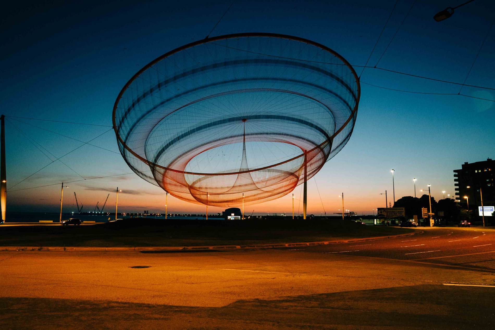
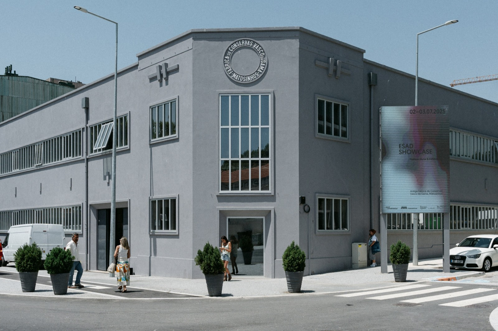

Onde se realiza
Matosinhos, cidade atlântica do Grande Porto. Um território de mar, indústria criativa e mobilidade ativa — o palco perfeito para a primeira Bikes Summit.
Cidade de mar e de ideias.
A poucos minutos do Porto, Matosinhos junta o Atlântico, uma forte tradição industrial e uma comunidade criativa em plena expansão.
Do histórico porto de pesca às praias urbanas, Matosinhos é uma cidade que vive virada para o mar. Foi aqui que a indústria conserveira floresceu — e é essa herança que hoje se reinventa em espaços de cultura, design e inovação.
É também uma cidade que aposta na mobilidade sustentável: ciclovias junto à orla, ligação de metro ao Porto e ao aeroporto, e uma escala humana que convida a pedalar. Uma escolha natural para uma Cimeira sobre o futuro da bicicleta.

Antiga Fábrica Vasco da Gama.
A Cimeira realiza-se numa antiga fábrica de conservas reabilitada — hoje um espaço icónico de cultura e eventos no coração de Matosinhos.
Antiga Fábrica de Conservas Vasco da Gama
Av. Menéres 657
4450-102 Matosinhos, Portugal
- Coordenadas: 41.183° N, 8.694° W
- Estacionamento na envolvente
- Espaço acessível e com wi-fi

Fácil de chegar.
De metro, avião, carro ou — como não podia deixar de ser — de bicicleta. Escolha a melhor forma de chegar a Matosinhos.
De Metro
Linha A (Azul) do Metro do Porto. Saia nas estações Brito Capelo ou Mercado, a poucos minutos a pé do venue.
Do Aeroporto
Aeroporto Francisco Sá Carneiro (OPO) a cerca de 15 minutos. De metro, Linha E (Violeta) com ligação à Linha A.
Táxi, Uber & Bolt
Serviços de táxi e TVDE (Uber, Bolt) disponíveis em toda a área. Cerca de 15 min do aeroporto e 20 min do centro do Porto.
De Carro
Acesso rápido pela A28 e VCI. Estacionamento disponível na envolvente da Antiga Fábrica Vasco da Gama.
De Bicicleta
Chegue como o evento pede: pelas ciclovias da orla atlântica. Parqueamento de bicicletas junto à entrada.
De Comboio
Chegue ao Porto de comboio (Campanhã / São Bento) e siga de metro pela Linha A até Matosinhos.
Vai juntar-se a nós em Matosinhos? Garanta já o seu lugar na 1ª edição.
Comprar Bilhetes